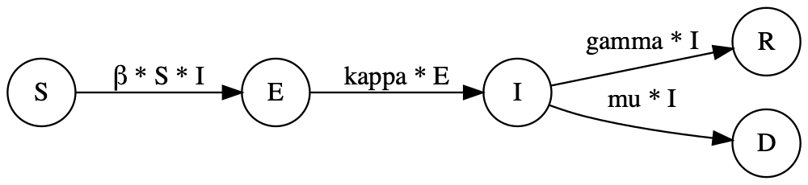
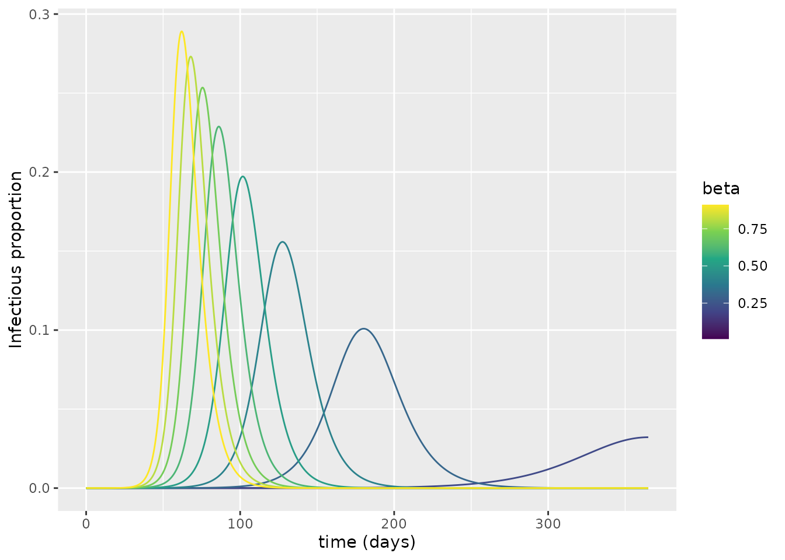
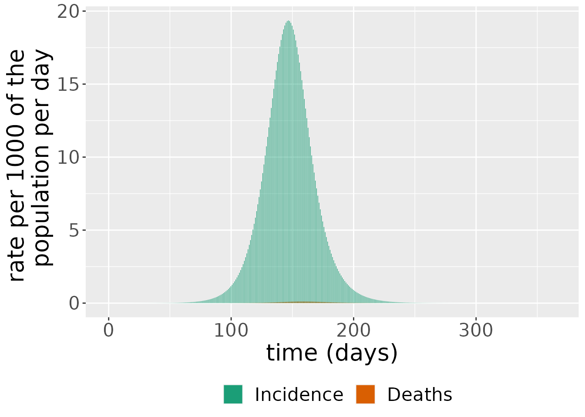
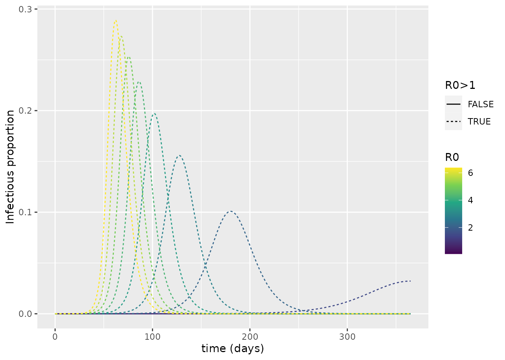
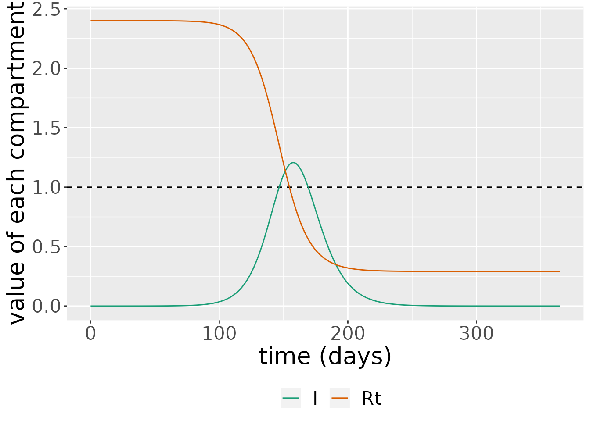
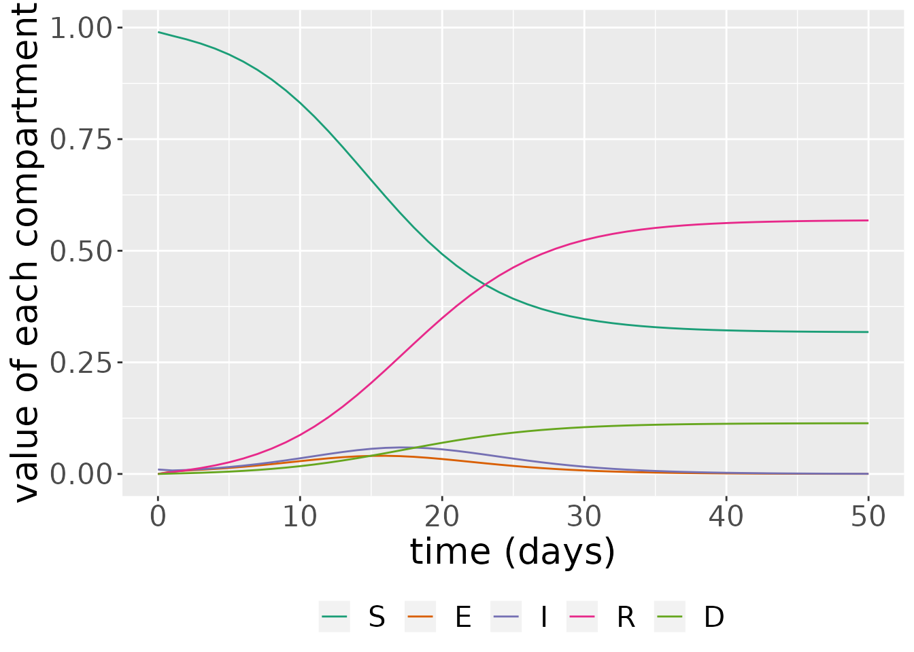

SEIRD model
Hui Jia Farm, Solveig A. van der Vegt and Ben Lambert
SEIRD.RmdIntroduction
This document introduces the deterministic SEIRD model, which is the foundation around which many, more advanced models of COVID-19 transmission dynamics are based (including all the other models within this package). In this vignette, we explain what this model represents, and we show how it can be used to understand epidemic dynamics typical of the “waves” of infection seen during the COVID-19 pandemic.
The SEIRD Model
The SEIRD model is an example of a compartmental model in mathematical epidemiology (Anderson and May 1992). In these types of models, individuals are assumed at a particular point in time to belong to only one of a number of “compartments”: discrete containers where all individuals within them are assumed to be in the same state. In an SEIRD model, there are five such compartments / states: Susceptible, Exposed, Infectious, Recovered and Dead. Susceptible individuals (\(S\)) have not been exposed to the virus. Exposed individuals (\(E\)) have been exposed to the virus and have been infected but are not yet infectious to others – they are in the latent period. Infectious individuals (\(I\)) can spread the virus to others. Recovered individuals (\(R\)) are no longer infectious, and, in this model, have acquired immunity as they do not return to the susceptible population. Some individuals, however, unfortunately do not recover from infection and die as a result, falling into the dead state (\(D\)).
By assuming that individuals belong only to one of these states, the model effectively assumes that all other information outside of these states is unimportant for transmission. So, an individual’s age, their location and any pre-existing medical conditions they may have are, for example, unnaccounted for in this model. In COVID-19 transmission, this assumption is unlikely to hold, since we know that individuals’ age does, for instance, strongly influence their susceptibility to death (Verity et al. 2020). The SEIRD model can, however, still be used to approximate the aggregate dynamics of the population since it captures the dominant features of human-to-human epidemic dynamics.
In compartmental models, individuals can move between these states following one of a predefined set of paths. In the SEIRD model, susceptible individuals can become infected with the virus after exposure to it from an infectious individual. In doing so, they can move from the susceptible compartment to the exposed, as is illustrated in the left-hand nodes of the below graph as indicated by the \(S\rightarrow E\) transition.

Exposed (\(E\)) individuals then become infectious (\(I\)) over time as they transition out of the latent period. For infectious individuals, there are two potential transitions: either an individual recovers and they enter the recovered state (\(R\)) where they remain forever; or they die, entering the dead state (\(D\)).
For all models in this package, it is assumed that the population size is sufficiently large that we can view the number of individuals in a given compartment on a continuous scale. We also assume that the process governing the dynamics is deterministic: that is, given the current state of the system (i.e. the numbers of individuals in the \(S\), \(E\), \(I\), \(R\) and \(D\) compartments), we can perfectly forecast its future behaviour. In reality, this is unlikely to hold since our model neglects to consider a myriad of factors that can influence the resultant epidemic. Indeed, stochastic models try to account for these unobserved elements by assuming randomness plays a role in the underlying dynamics. Nevertheless, in many instances, particularly when a population size is large, assuming deterministic system dynamics may give a good approximation of the mean of equivalent stochastic systems (Erban, Chapman, and Maini 2007).
Additionally, the modelling framework that we use assumes that the system changes continuously over time. Specifically, the system assumes that changes in the compartments are governed by a system of coupled ordinary differential equations (ODEs). An example of such an equation is:
\[\frac{\text{d}S}{\text{d}t} = -\text{newly exposed} = -\beta S I,\]
where the left-hand side gives the rate of growth of the susceptible compartment. Since, here, we have not modelled births nor natural deaths (i.e. non-COVID-19 deaths), the only way in which the number of susceptible individuals changes is through those individuals becoming exposed to infection. In this model, we assume that individuals are “well-mixed” – that is, that a susceptible individual can potentially contact with any infected individual in the population: this means that there are \(S * I\) contacts between susceptible and infected individuals at a point in time. Note, this is unlikely to be the case in reality, since populations are highly structured, both geographically and societally, meaning that individuals interact mostly with people in their immediate social group. In the model, the rate at which contacts between a susceptible and infected individual results in transmission is given by \(\beta>0\), meaning that the overall rate that susceptibles become exposed is given by \(\beta * S * I\). Because this leads to a decline in the susceptible group size, we require a minus sign in the above equation for \(\frac{\text{d}S}{\text{d}t}\).
Note that \(\beta\) is a rate (per unit time) at which a susceptible individual becomes infected on contact with an infected individual. It is not a probability as it is sometimes mistakenly labelled and so \(\beta > 1\) is possible.
The full SEIRD model consists of four ODEs that are coupled together: the first of these governs the behaviour of susceptible individuals, which has already been introduced. The next equation governs the growth of the exposed compartment:
\[\frac{\text{d}E}{\text{d}t} = \text{newly exposed} - \text{newly infectious} = \beta S I -\kappa E,\] where the rate of change is given by the difference between the flow into this compartment due to those individuals who have been newly exposed and the flow out of it, through those who have newly become infectious. (These represent the two arrows going into and out of the \(E\) compartment in the arrow graph above.)
The next compartment we consider is the infectious. This compartment grows in size as newly infectious individuals flow into it; over time, some infectious recover and, unfortunately, others die, both of which reduce the growth rate:
\[\frac{\text{d}I}{\text{d}t} = \text{newly infectious} - \text{newly recovered} - \text{deaths} = \kappa E - (\gamma + \mu) I,\]
Here, \(\gamma>0\) dictates the rate at which infectious individuals recover; \(\mu>0\) dictates the rate of death from infection.
The final two compartments are for the recovered and dead individuals and take the form:
\[\frac{\text{d}R}{\text{d}t} = \text{newly recovered} = \gamma I,\] \[\frac{\text{d}D}{\text{d}t} = \text{deaths} = \mu I.\]
We note that natural births and deaths – in other words, those unrelated to infection – are not considered in this model. Therefore, the SEIRD model is suitable only to diseases that span a short period of time, when natural births and deaths do not significantly affect the stock of susceptible individuals.
Overall, then, the system ODEs describing how the compartment populations evolve over time is:
\[\frac{\text{d}S}{\text{d}t} = -\beta S I,\] \[\frac{\text{d}E}{\text{d}t} = \beta S I -\kappa E,\] \[\frac{\text{d}I}{\text{d}t} =\kappa E - (\gamma + \mu) I,\]
\[\frac{\text{d}R}{\text{d}t} = \gamma I,\] \[\frac{\text{d}D}{\text{d}t} = \mu I.\]
Having specified the form of the growth rate for each of the compartments, we need to specify the initial sizes of each of the compartments, which we do via the initial conditions:
\[S(0) = S_\text{init},\ E(0) = E_\text{init},\ I(0) = I_\text{init},\ R(0) = R_\text{init},\ D(0) = D_\text{init}.\]
With both the system of ODEs and initial conditions specified, we can solve for the states over time, resulting in \(S(t), E(t), I(t), R(t)\) and \(D(t)\). Since the system of ODEs has no analytic solution, the system is solved numerically, using a numerical integrator. In this package, we use the R package deSolve (Soetaert, Petzoldt, and Setzer 2010) to numerically integrate the system, and the user can specify which of its numerical integrators to use (by default, it is the LSODA (Petzold 1983)).
In the implementation of the model in this package, the variables are normalized so\(S(t) + E(t) + I(t) + R(t) + D(t) \equiv 1\) for any given \(t\). This means that each of these state variables represents the fraction of the population in each of these states at a given point in time.
Typical epidemic data includes the number of new cases or new deaths occurring over a time interval. Here, we define “cases” to mean someone infected with the virus1. To calculate the number of cases arising over a time period, we track the cumulative number of cases through the following equation:
\[\frac{\text{d}C}{\text{d}t} = \text{newly exposed} = \beta S I,\] where we assume \(C(0) = 0\). The number of new infections arising between two time intervals \(t_1\) and \(t_2\) is then: \(C(t_2) - C(t_1)\). Similarly, the number of deaths occuring over the same interval is the difference in the cumulative deaths: \(D(t_2) - D(t_1)\).
Steady states
We can now consider whether there are equilibrium states of the system: values of the state variables where, unless perturbed, the system will remain where it is. To do so, we set the right-hand sides of the ODEs to zero. Taking the equation for the susceptibles:
\[\frac{\text{d}S}{\text{d}t} = -\beta S I = 0.\]
This only has solutions if either \(S=0\), in which case there are no individuals left to infect; or \(I=0\), in which case there are no infectious individuals: in other words, an infection has not been imported into the population. Considering all four ODEs, \(I=0\) implies that \(\frac{\text{d}R}{\text{d}t} = 0\) and \(\frac{\text{d}D}{\text{d}t} = 0\). Additionally, so long as there are no exposed individuals, \(\frac{\text{d}E}{\text{d}t}= 0\) and \(\frac{\text{d}I}{\text{d}t}= 0\) and So the equilibria are given by \(S=S'\), \(E=0\), and \(I=0\) which corresponds to a situation when there are no infected or infectious individuals in the population. In other words, in this model, there is no endemic equilibrium when the infection remains present throughout the population; only epidemic dynamics are possible.
Using an SEIRD model to simulate COVID-19 dynamics
We now show how comomodels can be used to create an SEIRD which captures the dominant characteristics of an unmitigated COVID-19 epidemic.
We first create an SEIRD object that we will use to run simulations.
my_model <- SEIRD()The most crucial step in using compartmental models of transmission dynamics is their parameterisation because different parameter ranges allow both qualitatively and quantitatively different dynamics. There are two ways to estimate the parameters of such models: i) to use data collected in the laboratory or field to estimate individual parameters; or ii) to fit these models to field data and, in doing so, estimate potentially a collective of parameters. There are limitations to both approaches. The first does not account for how uncertainty in one parameter might influence our estimates of another: a higher value of \(\beta\) can be offset by an increased value of \(\mu\) to result in similar case counts, for instance. The second approach generally only allows a subset of parameters to be estimated, since the available data are sparse and insufficient to jointly determine all.
The crucial thing, however, is that both approaches use data to determine parameters. And for practically all infectious diseases modelled, the available data do not pin down a model’s parameters to a single set. It is thus important to determine whether the conclusions of modelling – whether a new viral variant will lead a country’s healthcare infrastructure to be overrun, for instance – are sensitive to the parameter choices assumed.
Here, we follow the first approach to parameterising the SEIRD model, and show later how a sensitivity analysis can be performed.
The SEIRD model has four transmission parameters: \(\beta\), \(\kappa\), \(\gamma\) and \(\mu\). In what follows, we assume we are parameterising transmission of the ancestral SARS-CoV-2 strain (opposed to say, the Delta or Omicron variants).
We choose \(\kappa=1/5.5\), implicitly assuming an average latent period of 5.5 days (Xin et al. 2021). We assume that 0.66% of individuals infected with the virus die (Verity et al. 2020): this is termed an infection fatality ratio (IFR). Changing either \(\gamma\) or \(\mu\) affects both the rate at which individuals recover or die and the proportions which recover or die. As such, the implications of the individual parameter values are hard to intuit without recourse to the other. Here, we choose a different parameterisation that makes it simpler to set these parameters to appropriate values:
\[\begin{align} \gamma &= \zeta (1-\text{IFR})\\ \mu &= \zeta \text{IFR}. \end{align}\]
The proportion of infecteds who go on to die due to infection is given by the ratio of the rate of death to the overall rate out from the infectious compartment, which is the definition of the IFR:
\[\begin{equation} \frac{\zeta \text{IFR}}{\zeta \text{IFR} + \zeta (1-\text{IFR})} = \text{IFR}. \end{equation}\]
The average duration spent in the infectious compartment is given by:
\[\begin{equation} \frac{1}{\zeta \text{IFR} + \zeta (1-\text{IFR})} = \frac{1}{\zeta}. \end{equation}\]
Viral load data from hospitalised patients with known infector-infectee pairs can be used to determine the probability that infection occurs at a given time after the infector is first infected (He et al. 2020): in so doing, determining a distribution representing the duration of infectiousness. In this model, there is no presymptomatic transmission and it has been estimated that viral loads decline quickly within 7 days of being symptomatic (He et al. 2020). So, here, we assume an average infectious period of 7 days, resulting in \(\zeta=1/7\).
The remaining parameter, \(\beta\), is set to a value to produce the same basic reproduction number as was assumed in the influential “report 9” from Imperial College (Ferguson et al. 2020): \(R_0=2.4\) (see explanation of \(R_0\) below).
All of the above parameter choices, which we regard as defaults for ancestral SARS-CoV-2 transmission are available through a convenience function.
# convenience function
parameters <- covid_transmission_parameters()
print(parameters)
#> $R0
#> [1] 2.4
#>
#> $kappa
#> [1] 0.1818182
#>
#> $gamma
#> [1] 0.1419143
#>
#> $mu
#> [1] 0.0009428571
kappa <- parameters$kappa
gamma <- parameters$gamma
mu <- parameters$mu
R0_target <- parameters$R0
beta <- (mu + gamma) * R0_target
params <- list(beta=beta, kappa=kappa, gamma=gamma, mu=mu)
transmission_parameters(my_model) <- paramsTo check that the parameters have been set as desired, we can call:
transmission_parameters(my_model)
#> $beta
#> [1] 0.3428571
#>
#> $kappa
#> [1] 0.1818182
#>
#> $gamma
#> [1] 0.1419143
#>
#> $mu
#> [1] 0.0009428571Note, that both overall and age-structured and “default” transmission parameters for other variants are also available through the same function. For example, the below outputs transmission parameters for an age-structured model for the Delta variant (see function documentation for more details).
parameters <- covid_transmission_parameters(
variant = "delta",
is_age_structured = TRUE)
# here mu is age structured
print(parameters$mu)
#> # A tibble: 9 × 3
#> age_lower age_upper mu
#> <dbl> <dbl> <dbl>
#> 1 0 9 0.00000229
#> 2 10 19 0.00001
#> 3 20 29 0.0000443
#> 4 30 39 0.000371
#> 5 40 49 0.000686
#> 6 50 59 0.000857
#> 7 60 69 0.00271
#> 8 70 79 0.00614
#> 9 80 150 0.0111An additional set of parameters dictate the initial conditions of the system. Since SARS-CoV-2 is a novel virus, at the very beginning of the pandemic, everyone was susceptible. Here, we imagine a small number of infectious individuals entered a new population, at the start, representing 0.0001% of the population.
I0 <- 1e-6
inits <- list(S0=1-I0, E0=0, I0=I0, R0=0)
initial_conditions(my_model) <- initsNow we simulate the system for one year.
The simulation returns two objects: one is a data frame comprising the states over time. Here, we see that, over time, the proportion of susceptible individuals declines over time as the infection penetrates through the population. Initially, there are relatively few infected individuals but this then grows, reaching and then declining when there are relatively few susceptibles left. The number of recovered and dead individuals also grows over time.
states <- out_df$states
ggplot(states, aes(x = time, y = value)) +
geom_line(aes(color = compartment)) +
scale_color_brewer(palette = "Dark2") +
labs(x = "time (days)", y = "value of each compartment") +
theme(legend.position = "bottom", legend.title = element_blank(),
text = element_text(size = 20))
The simulation also outputs daily case incidence and deaths. These are derived from the state variables. Incidence is just the difference between the cumulative number of cases between two time points,
\[ \text{incidence(t)} = C(t) - C(t - 1),\]
since this shows the number of cases which have arisen between these time points. Deaths are also given by a difference, but, in this instance, between the cumulative number of deaths at two consecutive time points:
\[ \text{deaths(t)} = D(t) - D(t - 1).\]
changes <- out_df$changes
ggplot(changes, aes(x = time, y = value * 1000, fill = compartment)) +
geom_bar(stat="identity", position = position_dodge()) +
labs(x = "time (days)", y = "rate per 1000 of the \n population per day") +
theme(legend.position = "bottom", legend.title = element_blank(),
text = element_text(size = 20)) +
scale_fill_brewer(palette = "Dark2")
Sensitivity analysis
The SEIRD has four transmission parameters which influence the type of dynamics resultant by the system. In epidemiological systems, these parameters are not known and are set either by fitting the model to data or from external studies. As such, assessing the sensitivity of the model’s outputs to the input parameters is crucial.
In this section, we first investigate the sensitivity of the number of deaths to the transmission rate, \(\beta\). To do so, we run the model across a range of different \(\beta\) values and plot the proportions infectious.
parameters <- covid_transmission_parameters()
# function to setup and run model for different beta values
run_seird <- function(beta_val) {
params <- list(beta=beta_val,
kappa=parameters$kappa,
gamma=parameters$gamma,
mu=parameters$mu)
model <- SEIRD(initial_conditions = inits,
transmission_parameters=params)
times <- seq(0, 365, by = 0.1)
out_df <- run(model, times)
out_df$states
}
# run model across different beta values
beta_vals <- seq(0.01, 1, 0.1)
for(i in seq_along(beta_vals)) {
beta_temp <- beta_vals[i]
temp <- run_seird(beta_temp) %>% mutate(beta=beta_temp)
if(i == 1)
result <- temp %>% mutate(beta=beta_temp)
else
result <- result %>% bind_rows(temp)
}
# plot results
result %>%
filter(compartment=="I") %>%
ggplot(aes(x=time, y=value, colour = beta, group=as.factor(beta))) +
geom_line() +
scale_color_viridis_c() +
xlab("time (days)") +
ylab("Infectious proportion")
Why do some of the simulations produce epidemic waves whereas others fail to do so?
This is can be explored through the basic reproductive number, \(R_0\), which is the expected number of people infected by a single infectious individual in a population where everyone is susceptible. (Note that this basic reproductive number is unrelated to the initial condition for the recovered population.)
If \(R_0>1\), an infectious individual infects more than one other person and the epidemic initially grows exponentially; if \(R_0<1\), an infectious individual infects less than one other person and the epidemic fails to materialise.
But how can we calculate the \(R_0\) value? In a fully susceptible population, \(S=1\), meaning that the number of newly infected individuals produced per unit time is \(\beta I\). So the number of new infections produced for a single infectious individual is \(\beta\) per unit time. To determine the number of new infections that a single individual produces on average, we then need to know the typical duration of infectiousness. Once an individual becomes infectious, there are two mechanisms by which they stop being so: either they recover or they die. The overall rate at which these occur is \(\gamma + \mu\), so the average period an individual spends in the infectious state is \(1/(\gamma + \mu)\). So, the number of new infections produced by an infected individual is:
\[R_0 = \text{new infections per unit time} \times \text{duration of infectiousness} = \beta /(\gamma + \mu).\]
We can now calculate \(R_0\) for each of the curves using the inbuilt function in comomodels. We then colour the curves according to this value; we also make the type of line drawn depend on whether \(R_0>1\).
# convenience function to determine R_0
find_R0 <- function(beta_val) {
params <- params <- list(beta=beta_val,
kappa=parameters$kappa,
gamma=parameters$gamma,
mu=parameters$mu)
model <- SEIRD(initial_conditions = inits,
transmission_parameters=params)
R0(model)
}
# calculate R_0 values
R0_vals <- vector(length = length(beta_vals))
for(i in seq_along(beta_vals)) {
R0_vals[i] <- find_R0(beta_vals[i])
}
# create lookup
lookup <- tibble(beta=beta_vals,
R0=R0_vals)
# merge with results
result <- result %>%
left_join(lookup)
#> Joining, by = "beta"
# plot by R0
result %>%
mutate(R0_above=R0>1) %>%
filter(compartment=="I") %>%
ggplot(aes(x=time, y=value, colour = R0, group=as.factor(beta))) +
geom_line(aes(linetype=R0_above)) +
scale_color_viridis_c() +
scale_linetype("R0>1") +
xlab("time (days)") +
ylab("Infectious proportion")
From this, it is evident that \(R_0>1\) is required for an epidemic to arise. As such, we see the importance of \(R_0\) for dictating whether or not a pathogen successfully invades a population.
Effective reproduction number
Throughout the course of an epidemic, the fraction who are susceptible to infection fluctuates over time. As such, the average number of secondary infections produced by a single infected individual changes. This can be quantified by the effective reproduction number, \(R_t\), which represents the average number of new infections caused by an infected individual at time \(t\). To obtain \(R_t\), we simply multiply \(R_0\) by the fraction of the population susceptible:
\[R_t = R_0 * S(t) = \beta S(t) /(\gamma + \mu).\]
We can plot \(R_t\) over time for the initial simulations performed. We also show the proportion infectious over time (scaled up by a proportion to make the peak clearly visible).
# calculate Rt
R0_val <- R0(my_model)
s_df <- states %>%
filter(compartment=="S") %>%
mutate(value=value * R0_val) %>%
mutate(compartment="Rt")
# plot: blowing up I value so that peak is visible
states %>%
bind_rows(s_df) %>%
mutate(value=if_else(compartment=="I", 10 * value, value)) %>%
filter(compartment %in% c("Rt", "I")) %>%
ggplot(aes(x = time, y = value)) +
geom_hline(yintercept = 1, linetype=2) +
geom_line(aes(color = compartment)) +
scale_color_brewer(palette = "Dark2") +
labs(x = "time (days)", y = "value of each compartment") +
theme(legend.position = "bottom", legend.title = element_blank(),
text = element_text(size = 20))
Here, we see that as \(R_t\rightarrow 1\), we reach so-called “herd immunity”, and there are no longer sufficient susceptibles in the population to fuel continued epidemic growth. This occurs when \(R_t<1\), which indicates:
\[\begin{equation} S(t) < \frac{1}{R_0}. \end{equation}\]
The critical proportion of the population that need to have been exposed to the virus to achieve herd immunity is then:
\[\begin{equation} R^* = 1 - \frac{1}{R_0}. \end{equation}\]
When a fraction exceeding \(R^*\) have been exposed, the immunity of those who have recovered from the virus effectively protects those who haven’t.
References
Anderson, Roy M, and Robert M May. 1992. Infectious Diseases of Humans: Dynamics and Control. Oxford university press.
Erban, Radek, Jonathan Chapman, and Philip Maini. 2007. “A Practical Guide to Stochastic Simulations of Reaction-Diffusion Processes.” arXiv Preprint arXiv:0704.1908.
Ferguson, Neil, Daniel Laydon, Gemma Nedjati Gilani, Natsuko Imai, Kylie Ainslie, Marc Baguelin, Sangeeta Bhatia, et al. 2020. “Report 9: Impact of Non-Pharmaceutical Interventions (Npis) to Reduce Covid19 Mortality and Healthcare Demand.”
He, Xi, Eric HY Lau, Peng Wu, Xilong Deng, Jian Wang, Xinxin Hao, Yiu Chung Lau, et al. 2020. “Temporal Dynamics in Viral Shedding and Transmissibility of Covid-19.” Nature Medicine 26 (5): 672–75.
Petzold, Linda. 1983. “Automatic Selection of Methods for Solving Stiff and Nonstiff Systems of Ordinary Differential Equations.” SIAM Journal on Scientific and Statistical Computing 4 (1): 136–48.
Soetaert, Karline, Thomas Petzoldt, and R. Woodrow Setzer. 2010. “Solving Differential Equations in R: Package deSolve.” Journal of Statistical Software 33 (9): 1–25. https://doi.org/10.18637/jss.v033.i09.
Verity, Robert, Lucy C Okell, Ilaria Dorigatti, Peter Winskill, Charles Whittaker, Natsuko Imai, Gina Cuomo-Dannenburg, et al. 2020. “Estimates of the Severity of Coronavirus Disease 2019: A Model-Based Analysis.” The Lancet Infectious Diseases 20 (6): 669–77.
Xin, Hualei, Yu Li, Peng Wu, Zhili Li, Eric H Y Lau, Ying Qin, Liping Wang, Benjamin J Cowling, Tim K Tsang, and Zhongjie Li. 2021. “Estimating the Latent Period of Coronavirus Disease 2019 (COVID-19).” Clinical Infectious Diseases, September. https://doi.org/10.1093/cid/ciab746.